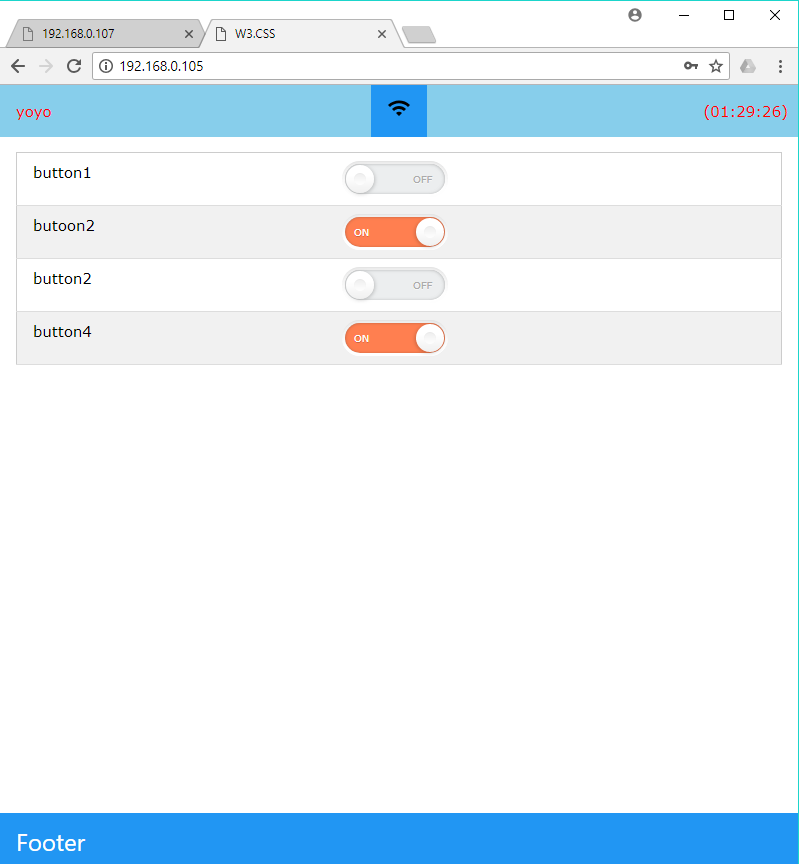

with this code we can connect our esp8266 with our router easily we dont need to edit ssid and passowrd in the code.
first it need to be upload in esp8266 (tested on ESP01 and ESP12e) and than upload the data folder .
in the data folder we have the index file and the json file, (i have use the json file to save the status of my led .)
than the esp8266 will create hotspot named "yoyo" and passord (323taay053). after connecting it , visit (192.168.4.1)
with any browser, than we will get this page

click on the wifi icon than you will get a input bar for SSID and passowrd .
submit your ssid and password wait for reboot. after reboot it will connect to router automatically .
this project was done for controlling 4 relay with esp12e. so u can also use this project for home automation system. i just try to make this project user friendly